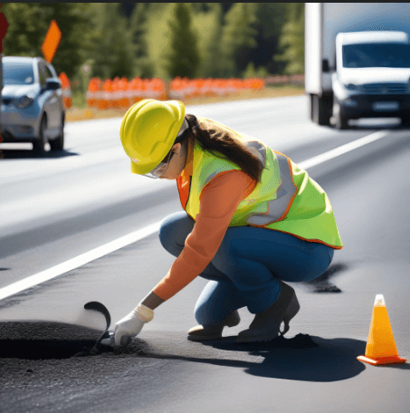

Portafolio tecnico

Mecánica de Suelos
Líderes en el control de materiales geotécnicos, con una vasta experiencia en los ensayes necesarios para asegurar la máxima calidad de los suelos empleados en obras de infraestructura. Estoy altamente capacitada para garantiza una supervisión rigurosa y moderna en cada procedimiento de construcción, brindando confianza y precisión en cada proyecto. Me destaco por ofrecer resultados confiables que cumplen con los más altos estándares de la industria, lo que me posiciona como la mejor opción para asegurar la estabilidad y durabilidad de las obras desde su base.

Asfalto
Experta en el control y asesoría de obras de asfaltos, incluyendo mezcla asfáltica, riego bituminoso y sellos de tratamiento asfáltico, entre otras actividades relacionadas. Mi profundo conocimiento técnico y vasta experiencia en el área, aseguran la aplicación de los mejores procedimientos y materiales, garantizando superficies duraderas y de alta calidad. La seriedad, modernidad y precisión que entrego en cada proyecto me posicionan como la opción más confiable para asegurar la excelencia en todo tipo de obras asfálticas.

Hormigón
Especialista en el control y asesoría de obras de hormigón, abarcando tanto estructuras como pavimentos, adaptando a diferentes tipos de cemento, condiciones geográficas y materiales pétreos. Garantizo dosificaciones precisas, procesos constructivos eficientes y análisis estadísticos rigurosos para asegurar la calidad y durabilidad de cada proyecto. Mi experiencia y enfoque técnico me permiten ofrecer soluciones confiables y adaptadas a las exigencias de cada obra, brindando resultados de excelencia en cada desafío que asumo.


Cuento con los conocimientos y la experiencia necesarios para realizar controles exhaustivos en actividades complementarias dentro de la construcción de obras viales, como la verificación del cumplimiento de especificaciones en barreras de contención, señalética vial y la calidad de las enfierraduras requeridas. Mi compromiso es asegurar que cada detalle cumpla con los más altos estándares de calidad. Además, de elaborar los informes y ensayes con el máximo rigor técnico y estricto apego a la normativa vigente, garantizando que cada proyecto se ejecute conforme a las exigencias establecidas y con resultados precisos y confiables.